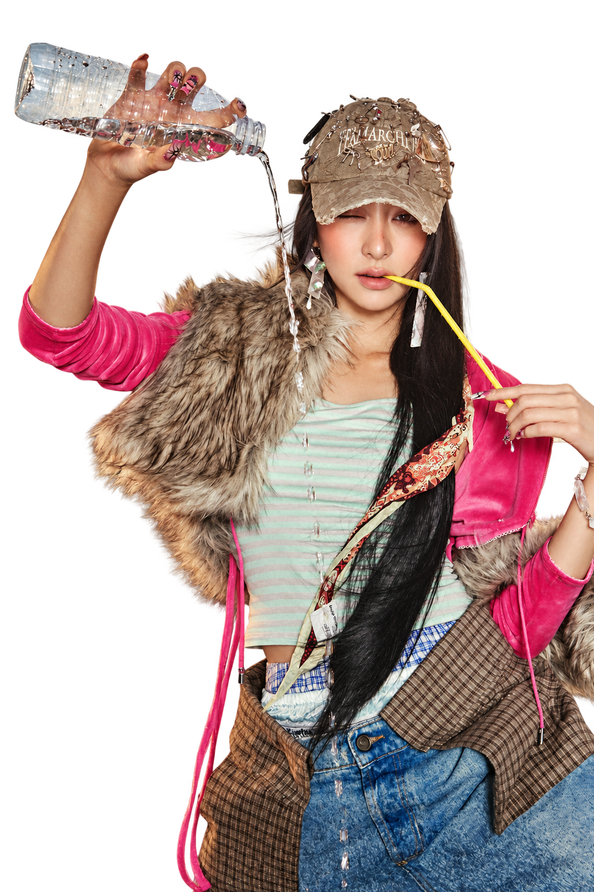

LE SSERAFIM / YUNJIN / 04—05
GUAIAC
윤진의 작은 야생
VOL. 04 / GUAIAC
Today's forecast: Yunjin.
Clouds, camera flash, and a tiny scoop of something sweet. Keep wandering until the good light finds you.
FIELD LOG / SAVED
Pick a frame to open it. Drag a thumbnail into the desktop, too.